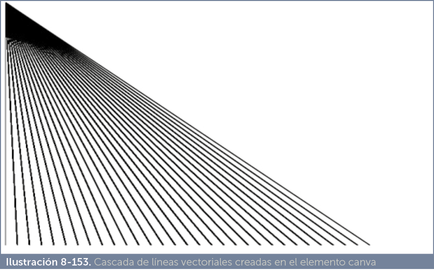
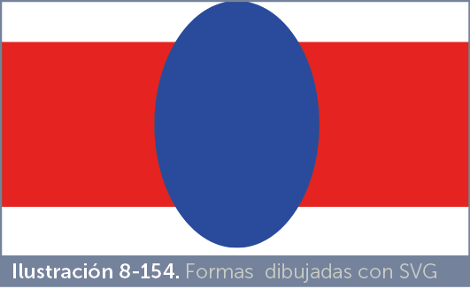
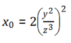

Indudablemente no se puede concebir una página web hoy en día sin incluir en ella elementos visuales atractivos. En este sentido se conoce como multimedia el hecho de incorporar medios procedentes de diversos formatos.
Esencialmente la base es la inclusión de imágenes, pero también es cada vez más común la inclusión de vídeos, sonido. También hay que tener en cuenta que hay otros elementos que proceden de tecnologías más complejas, como es el caso de los elementos de tipo Flash. Todo aquello que no sea texto, está metido respecto a este capítulo, en el mismo carro.
El hecho de que podamos incluir una imagen en la página requiere que tengamos en cuenta como funcionan los navegadores.
Como hemos explicado en los primeros capítulos, una página web es un documento de texto que utiliza el lenguaje etiquetado HTML, el navegador interpreta las etiquetas HTML y así da formato de forma apropiada a los distintos elementos de la página. Evidentemente cualquier contenido que no sea texto queda fuera de este planteamiento.
Por lo tanto la idea para ese contenido parte de estas premisas:
[1]El contenido no textual de una página web se suele almacenar en un archivo aparte. Es decir, si deseamos incorporar una imagen, ésta deberá estar almacenada en un archivo; no se puede copiar y pegar la misma en la página al estilo de los programas como Word esa idea debe quedar desterrada de nuestra mente.
Sí es posible colocar algunos elementos multimedia directamente en el código HTML de la página, pero siempre y cuando se definan con lenguajes de etiquetas compatibles con los navegadores. Tal es el caso, por ejemplo, de SVG (formato XML de imagen vectorial) o MathML (lenguaje XML para representar ecuaciones matemáticas).
[2]El archivo formará parte de nuestro sitio web, cuando publiquemos en Internet nuestro código, todos los archivos multimedia que se muestran en nuestras páginas se deben subir también, haciendo que la ruta local hacia ellos no cambie al subirlos.
[3]Para que el contenido del archivo forme parte de la página, en el código de la misma se usará una etiqueta (por ejemplo img para las imágenes) que haga referencia a ese archivo, de modo que el contenido será un elemento más dentro de la página.
[4]La etiqueta se coloca en la posición de la página en la que queremos que aparezca el contenido del archivo. Mediante la propia etiqueta, normalmente, tendremos atributos que nos permiten indicar el tamaño con el que queremos ver el contenido y otros detalles que pueden ser muy importantes para su correcta visualización.
[5]El contenido del archivo será visible en el navegador si el navegador web tiene capacidad para mostrarle. Esto es fundamental, podemos intentar colocar por ejemplo una hoja de cálculo hecha en el programa Excel de Microsoft, pero no será posible porque los navegadores no tienen capacidad de mostrar ese contenido.
[6]Este último punto implica una idea fundamental, sólo se puede mostrar contenido compatible con el navegador. Más exactamente, con el navegador del usuario. De nada sirve que instalemos en nuestro navegador plugins (extensiones en los navegadores) especiales para mostrar elementos concretos. Si los usuarios no tienen ese plugin, el contenido no le podrán ver. Por lo que solo deberemos utilizar elementos multimedia que sepamos que son muy compatibles, teniendo en cuenta qué navegadores se usan habitualmente por parte de los usuarios.
Un ejemplo muy paradigmático es lo que ha ocurrido con los contenidos de tipo Flash. Cuando ese tipo de contenido se hizo muy popular, los navegadores incluían de base el plugin para poder mostrar elementos Flash. Incluso se exigía al usuario que su navegador incluyera dicho plugin para poder ver algunas páginas. Pero Flash ha acarreado cierta mala fama en estos últimos años por el uso extensivo de recursos y por, según algunas compañías, causar problemas en sus navegadores.
En la actualidad el plugin de Flash está en claro desuso. Ahora ya no se incluye este plugin de base en la mayoría de navegadores. Por lo tanto es muy arriesgado para un creador de aplicaciones web crear elementos de este tipo y se ha optado por utilizar otras técnicas para dotar a las páginas de la interactividad y potencia gráfica que ofrecían los plugins de Flash.
[7]Hay que tener en cuenta que el contenido multimedia suele ocupar mucho, por lo que es fundamental optimizarlo y/o aplicar técnicas de tipo streaming (especialmente en el caso del vídeo) que permitan ir visualizando el contenido poco a poco a medida que se descarga. Es fácil entender esta idea observando como funciona la visualización de vídeos, por ejemplo, en YouTube.
Dejando de lado los contenidos especiales (como Flash, Silverlight u otros formatos complejos), cualquier aplicación web actual muestra imágenes y, cada vez más, vídeo y audio.
El problema es el formato de estos elementos, ya vimos en el tema anterior la cantidad de formatos diferentes que poseen las imágenes. En el caso del vídeo y el audio el problema es mayor.
El vídeo es un tipo de contenido que ocupa mucho espacio por lo que la lucha ha sido siempre comprimir al máximo su tamaño. Para ello se utiliza software especial capaz de decodificar y codificar vídeo haciendo que ocupe muy poco espacio. La potencia de los actuales procesadores permite realizar esa ardua tarea incluso a tiempo real (mientras el vídeo se reproduce).
El problema es que el navegador tiene que tener incorporado ese software, llamado popularmente codec. No solo eso: tiene que ser el mismo codec.
En el vídeo (también en el audio), los archivos se graban eligiendo un tipo concreto de vídeo, como por ejemplo puede ser mp4. Sin embargo el hecho es que un archivo de vídeo es un contenedor de elementos multimedia que incluye: las imágenes de vídeo, el audio, metadatos y otras informaciones. Lo normal es que se usen al menos dos codecs: uno para el audio y otro para el vídeo. Incluso el mismo formato puede usar diferentes codecs para cada cosa.
En definitiva las posibilidades son enormes porque hay decenas de codecs (aunque algunos más populares que otros). Por lo tanto poder reproducir un elemento concreto dependerá de si el navegador incorpora los codecs concretos.
De esta forma si incorporamos vídeo a nuestra página a través de un enlace normal:
<a href=”video1.mpeg”>Ver vídeo</a> |
El navegador buscará si disponemos del plugin apropiado para ver el vídeo. Si no es así, simplemente lo descargará en nuestro ordenador al no poder mostrar el contenido directamente.
En otros tipos de elementos multimedia pasará parecido. Como ya se ha comentado los navegadores deben ser capaces de traducir el tipo de contenido concreto, bien porque de base incorporan esta posibilidad o porque se añaden plugins para ello.
Como ya hemos comentado, el vídeo posee numerosos formatos relacionados con los diversos codecs y tipos de contenedores del mismo. Como cada navegador ha apostado por unos codecs concretos de vídeo, lo normal es que los creadores de contenido graben los vídeos usando varios codecs y formatos.
En la siguiente dirección disponemos de una lista de compatibilidad en audio y vídeo:
https://developer.mozilla.org/en-US/docs/Web/HTML/Supported_media_formats#Browser_compatibility
En HTML 5 se ha simplificado, en parte, el problema ya que se habla solo de tres formatos de vídeo:
Normalmente usa el codec H264 para el vídeo, pero también se puede usar FLAC y otros codecs. Para el audio se usan, normalmente, los codecs MP3 o el AAC. Este contenido tiene asociado el tipo MIME (indicación oficial de contenido) video/mp4.
Se hace a través del elemento video. Ejemplo:
<video src=“ejemplo.mp4”></video> |
|
atributo |
uso |
|
src |
URL al vídeo que se desea mostrar |
|
width |
Anchura del vídeo en nuestra página |
|
height |
Altura del vídeo en nuestra página |
|
autoplay |
Usa el valor fijo autoplay (o no se indica valor alguno) para indicar que el vídeo se inicia automáticamente en cuanto se descargue |
|
loop |
Usa el valor fijo loop (o no se indica valor alguno) para indicar que el vídeo se ejecuta automáticamente una y otra vez |
|
controls |
Con valor controls (o no indicando valor alguno) indica que el navegador mostrará controles para que el usuario pueda controlar la reproducción del vídeo de reproducción (pausa, play,…) |
|
preload |
Indica al navegador una recomendación sobre cómo debemos realizar la descarga. Posibilidades:
|
|
poster |
Permite indicar la dirección URL a una imagen que se mostrará mientras el vídeo no se está reproduciendo. Si no se usa este atributo, se usa el primer fotograma del vídeo como póster. |
|
muted |
Atributo sin valor que marca que el vídeo se debe reproducir sin audio. |
Ejemplo:
<video src=“carrera.mp4” controls autoplay poster=”f1.jpg”> </video |
Se mostrará el vídeo carrera.mp4 de modo que se empezará a reproducir en cuanto se cargue. Antes de la carga del vídeo se mostrará la imagen f1.jpg, el vídeo se reproducirá inmediatamente (si que haga falta que el usuario pulse play).
Dentro del elemento vídeo, podemos incorporar elementos source que hagan referencia a distintas fuentes de vídeo. source dispone de estos atributos:
|
atributo |
uso |
|
src |
URL a la fuente de vídeo |
|
type |
Tipo de vídeo que queremos mostrar. Se usa un tipo MIME para especificar el tipo |
Ejemplo:
<video autoplay=”autoplay” controls=”controls” type=”video/ogg;codecs=’theora, vorbis’ “ > |
Dentro de type, el uso de codecs es opcional, ya que si el navegador no reconoce el formato no suele hacer caso a los codecs que se indiquen (aunque a veces les descarga). La idea es que si el primer formato no se reconoce (primer elemento source), se intenta el segundo y así sucesivamente. Si ninguno es reproducible por el navegador actual, éste mostrará la frase final tras el último source.
Se realiza mediante elementos de tipo track, los cuales se colocan dentro de la etiqueta video. Desde hace un par de años, casi todos los navegadores manejan los subtítulos, aunque todavía hay algunas carencias al respecto.
Los subtítulos son textos que permiten traducir el contenido del vídeo. Por ejemplo un vídeo podría estar grabado en inglés y los subtítulos nos enseñarías el texto traducido en español a tiempo real. Hay varios formatos de subtítulos pero el estándar en la web es WebVTT (Web Video Text Tracks). Normalmente se utilizan archivos de texto cuya extensión es vtt basados en este estándar.
Ejemplo de archivo vtt:
WEBVTT 1 00:00:00.150 --> 00:00:01.300 ¿Habéis visto a Sara? 2 00:00:01.540 --> 00:00:03.800 -No -Yo tampoco la he visto |
En este archivo la primera frase se muestra en el primer segundo del vídeo. En los dos segundos siguientes so mostrará el otro texto. En el navegador Chrome, y en algunos otros, se permite dar formato CSS al texto de los subtítulos.
El elemento track que permite asignar subtítulos a un vídeo posee los siguientes atributos:
|
atributo |
uso |
|
src |
URL al archivo VTT o SRT que contiene los subtítulos |
|
kind |
Tipo de subtítulos. Posibilidades:
|
|
label |
Nombre de los subtítulos para reconocerlos en caso de haber indicado varios. Es el texto con el que aparece el nombre del idioma en el navegador al elegir un subtítulo u otro. |
|
srclang |
Código de idioma (oficial según la norma ISO BCP 47) de los subtítulos: por ejemplo es para español, en para inglés, fr francés, etc. |
|
default |
Indica los subtítulos que se deben de cargar por defecto si no es posible saber el idioma de preferencia del usuario. |
Ejemplo:
<video autoplay=”autoplay” controls=”controls” poster=”foto1.jpg” > label=”Español” > label=”Alemán” > |
Insertar audio en una páginas web es muy similar a insertar vídeo. El elemento que lo hace posible, se llama precisamente audio. Sus atributos (que funcionan igual que con el elemento video) son:
|
atributo |
valor |
|
src |
URL a la fuente de audio que estamos insertando |
|
autoplay |
El audio se reproducirá inmediatamente no se esperará a que el usuario pulse el botón Play |
|
loop |
El audio se repetirá continuamente |
|
controls |
Se muestran los controles de ese audio (play, rewind, pause, etc.) |
|
preload |
Recomendación sobre cómo debemos realizar la descarga. Posibilidades:
|
Con el audio hay el mismo problema con la cuestión de los codecs y los formatos, por lo que también es habitual convertir el audio a distintos formatos y dar opciones dentro de la etiqueta audio gracias a la etiqueta source. Ejemplo:
<audio controls=”controls” autoplay> |
En inglés canvas significa lienzo, y define muy bien para que sirve este elemento creado en la norma HTML5. Es uno de los componentes de HTML5 más famosos por el gran aporte que ha supuesto al dinamismo de las páginas web.
Mediante este elemento dispondremos de un área que podremos utilizar donde queramos para dibujar elementos gráficos mediante las instrucciones gráficas del lenguaje JavaScript. Eso ha permitido (gracias a la potencia de JavaScript) crear juegos, animaciones y elementos visuales atractivos en las páginas web.
Ejemplo de uso de canvas (posee código JavaScript):
<canvas id=”lienzo1” width=”600” height=”400”> |
Mediante la etiqueta script podemos colocar código en lenguaje JavaScript, desde ese código podemos utilizar el lienzo para dibujar.
El resultado del código anterior es la imagen:

En cualquier caso es un elemento que no está reconocido en muchos navegadores (aunque sí en todos los modernos).
En el tema anterior hemos visto que es posible insertar imágenes SVG (imágenes de tipo vectorial) a través del elemento img al igual que las imágenes JPEG o PNG por ejemplo. Sin embargo las imágenes SVG están construidas en un dialecto de XML que cualquier navegador de hoy en día reconoce.
Es decir, podemos insertar el código SVG directamente en una página web. Ejemplo:
<svg xmlns=”http://www.w3.org/2000/svg”> |
Dentro del elemento svg se colocan las etiquetas que permiten dibujar en el área del svg. En principio si no indicamos tamaño alguno, todo el área de la página web se utiliza para dibujar en SVG, pero podemos indicar atributos width y height para indicar tamaños concretos.
Las etiquetas que se pueden utilizar dentro de svg pertenecen al lenguaje estándar SVG y rebasan el propósito de este manual, pero un ejemplo de ellas sería:
<h1>Dibujo SVG</h1> <svg xmlns=”http://www.w3c.org/2000/svg” height=”400”> |
El resultado:

El lenguaje MathML es un clásico de los lenguajes derivados de XML. Su aplicación es mostrar ecuaciones matemáticas al estilo del lenguaje LaTeX, consiguiendo la tipografía y forma visual apropiada para las fórmulas. Aunque se considera parte de HTML 5, solo Safari y Firefox admiten este lenguaje.
Ejemplo de código MathML:
<math> |
Obtiene el resultado:
Nuevamente en HTML 5 ha habido una preocupación sobre cómo utilizar elementos multimedia en una página web. Hasta la aceptación de HTML 5 ha sido problemática la forma de añadir elementos multimedia.
El uso de Flash simplificó esta posibilidad dada la potencia de esta tecnología, pero dificultaba el aprendizaje para realizar páginas y exigía utilizar una forma de trabajar ajena a HTML y que además dependía de una empresa en concreto (Adobe). Actualmente la idea de muchos creadores es ir retirando Flash y aprovechar las nuevas capacidades de HTML 5 para la multimedia.
En especial HTML 5 avanza enormemente en cuestiones relacionadas con el vídeo y gracias al elemento canvas, gran parte de lo que sólo parecía poder hacerse mediante Flash, es posible hacerlo ahora sin salirse del estándar HTML.
El problema es el mismo que con las imágenes, es que hay numerosos formatos de vídeo y audio y que cada navegador tiene capacidades distintas al respecto. Es decir, cada navegador es capaz de reproducir directamente sólo un conjunto pequeño de tipos de vídeo.
Por ello muchos usuarios conocedores de estos problemas saben que en los navegadores hay que instalar plugins (extensiones) para poder ver vídeos u oír música. No es un problema sólo de los navegadores, casi es el problema fundamental del mundo de la imagen, el vídeo y el audio.
De esta forma si incorporamos vídeo a nuestra página a través de un enlace normal:
<a href=”video1.mpeg”>Ver vídeo</a> |
El navegador buscará si disponemos del plugin apropiado para ver el vídeo, si no es así simplemente lo descargará en nuestro ordenador al no poder mostrar él el contenido.
Se trata de una etiqueta ya veterana que se utiliza para colocar en una página web elementos no pertenecientes al lenguaje HTML de cualquier tipo: como animaciones Flash, vídeo, audio, etc.
Usa los siguientes atributos:
|
atributos |
uso |
|
src |
URL al recurso que se desea mostrar |
|
type |
Tipo MIME (según la norma IANA de tipos de medios) que indica el tipo de recurso al que se refiere el elemento embed. |
|
height |
Altura de la ventana que mostrará el recurso |
|
width |
Anchura de la ventana que mostrará el recurso |
Está etiqueta está orientada a sustituir a la anterior y permite incorporar cualquier tipo de contenido a una página web. Tiene más posibilidades que la anterior. Los atributos posibles son:
|
atributo |
uso |
|
data |
URL al recurso que se desea mostrar |
|
type |
Tipo MIME que indica el contenido del recurso que se incorpora con la etiqueta. |
|
height |
Altura de la ventana que mostrará el recurso |
|
width |
Anchura de la ventana que mostrará el recurso |
|
usemap |
Permite indicar el nombre de un mapa de imágenes (usando #nombre) que actuará sobre el objeto. El mapa de imágenes funcionará igual que con la etiqueta img (según lo comentado en el apartado dedicado a los mapas de imágenes) |
|
name |
Permite indicar un nombre para el objeto |
|
form |
Indica el nombre del formulario al que pertenece este objeto |
Elemento interior a object (no tiene sentido sin él), que permite especificar parámetros al objeto incrustado. A través de param pasamos instrucciones al plugin que reproduce el objeto a fin de que lo haga según nuestras necesidades.
La forma de indicar los parámetros es mediante los atributos name (en el que se indica el nombre del atributo) y value (valor del atributo)
Ejemplo:
<object data=”Wildlife.wmv” type=”video/x-ms-wmv” width=”500” height=”300”> |
En el ejemplo el vídeo (en caso de que el navegador pueda reproducirle), se ejecutará automáticamente al cargar la página gracias a que se ha indicado el parámetro autoplay con valor true.
Es un elemento que había desaparecido en el estándar pero que HTML 5 ha recuperado. La idea original es colocar un documento dentro de otro documento, es decir sirve para incrustar contenido de una dirección dentro de la página que le hace referencia. Su popularidad actual se debe a youtube y otras páginas que nos sugieren el uso de esta etiqueta para incrustar contenido procedente de ellas; por lo que es una etiqueta de uso muy habitual para incrustar contenido multimedia (aunque iframe significa marco interior e inicialmente estaba pensado para los obsoletos marcos).
Atributos:
|
atributo |
uso |
|
src |
URL al recurso que se desea mostrar |
|
width |
Anchura del objeto en nuestra página |
|
height |
Altura del objeto en nuestra página |
|
sandbox |
Permite indicar restricciones al contenido incorporado por iframe. Los posibles valores son:
|
|
seamless |
No se utiliza porque ningún navegador le reconoce todavía. Hace que el iframe sea tratado como si fuera parte normal de la página web (no se mostrarán bordes, indicaciones del destino, barras de desplazamiento,…) |